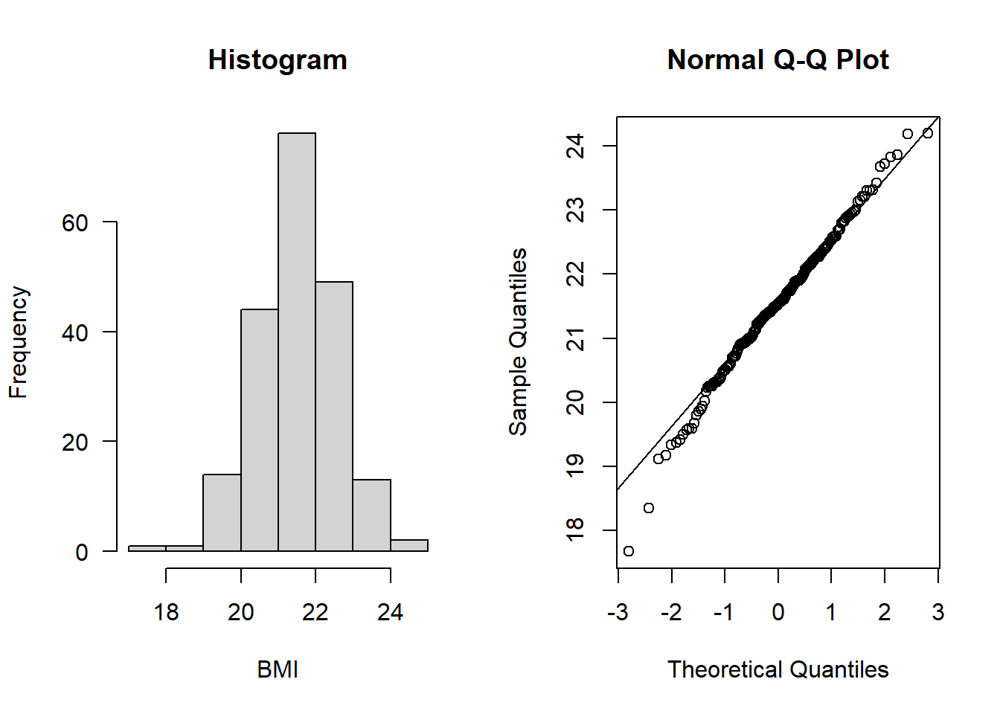
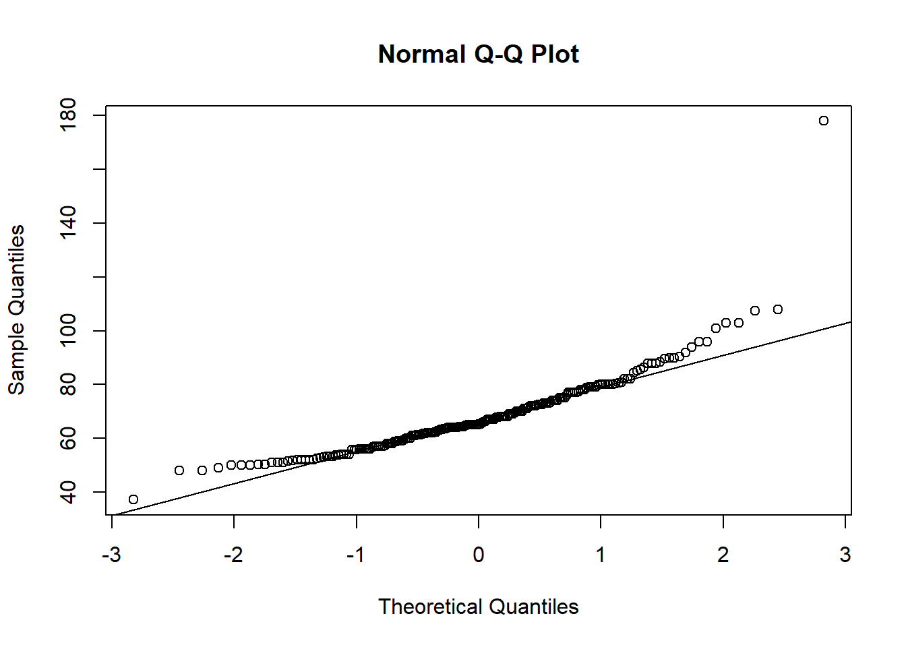

set.seed(16)
Alzheimers <- data.frame(neurons = c(rnorm(100, 20, 5), rnorm(100, 30, 5)),
group = rep(c("Asymptomatic","Symptomatic"), each = 100),
sex = c(rep("M", 50), rep("M", 50), rep("F", 50), rep("F", 50)),
age = round(rnorm(200, 70, 5), 0),
BMI = c(rnorm(100, 22, 1), rnorm(100, 21, 1)))Practical 2 - Correlation analysis
Testing for association between two continuous variables
Learning Outcomes (LOs)
Here’s what you should know and be able to do after completing this practical:
LO1: Plot the association between two continuous variables
LO2: Rank data
LO3: Spot outliers and determine whether to remove them or not
LO4: Check statistical test assumptions
LO5: Perform appropriate correlation analyses
LO6: Interpret the results from correlation analysis
LO7: Report the results in prose
LO8: Know what to do when assumptions aren’t met
TUTORIAL
Parametric correlation analysis - Pearson’s correlation
For this tutorial, let’s work with the Alzheimer’s dataset (including also BMI data)
Like last time we’re going to set a seed so that we all get the same data (and therefore the same correlation analysis!
Set the seed to “16” and create the Alzheimers data:
Explore the data
Remember, exploring the data is always a critical step
Take a quick look and summarise:
names(Alzheimers) [1] "neurons" "group" "sex" "age" "BMI" head(Alzheimers) neurons group sex age BMI
1 22.38207 Asymptomatic M 68 21.60350
2 19.37310 Asymptomatic M 76 22.15924
3 25.48108 Asymptomatic M 67 22.80087
4 12.77885 Asymptomatic M 73 21.75576
5 25.73915 Asymptomatic M 62 23.72602
6 17.65794 Asymptomatic M 71 22.38629tail(Alzheimers) neurons group sex age BMI
195 28.56378 Symptomatic F 69 20.71530
196 33.65319 Symptomatic F 71 19.89047
197 29.57632 Symptomatic F 72 20.25048
198 33.83304 Symptomatic F 70 21.78484
199 27.18775 Symptomatic F 72 19.11942
200 31.62627 Symptomatic F 71 20.55365str(Alzheimers) 'data.frame': 200 obs. of 5 variables:
$ neurons: num 22.4 19.4 25.5 12.8 25.7 ...
$ group : chr "Asymptomatic" "Asymptomatic" "Asymptomatic" "Asymptomatic" ...
$ sex : chr "M" "M" "M" "M" ...
$ age : num 68 76 67 73 62 71 62 63 73 72 ...
$ BMI : num 21.6 22.2 22.8 21.8 23.7 ...summary(Alzheimers) neurons group sex age
Min. : 8.408 Length:200 Length:200 Min. :56.0
1st Qu.:20.260 Class :character Class :character 1st Qu.:67.0
Median :25.350 Mode :character Mode :character Median :71.0
Mean :25.195 Mean :70.5
3rd Qu.:29.736 3rd Qu.:74.0
Max. :43.147 Max. :86.0
BMI
Min. :17.67
1st Qu.:20.92
Median :21.53
Mean :21.52
3rd Qu.:22.22
Max. :24.20 Define a research question and hypotheses
Let’s test whether neuron cell density is associated with BMI
Research Question: Is neuron cell density (M/g) associated with BMI?
Hypotheses:
Null Hypothesis (H0): There is no correlation between neuron cell density with BMI.
Alternate Hypothesis (H1): There is correlation between neuron cell density with BMI.
As part of good data exploration, we should plot this association:
plot(Alzheimers$neurons ~ Alzheimers$BMI,
ylab = "Neuron cell density (m/g)", xlab = "BMI", las = 1)Check statistical test assumptions
For the Pearson’s correlation there are a few assumptions:
Assumption 1: Variables must be continuous - check using str()
str(Alzheimers)'data.frame': 200 obs. of 5 variables:
$ neurons: num 22.4 19.4 25.5 12.8 25.7 ...
$ group : chr "Asymptomatic" "Asymptomatic" "Asymptomatic" "Asymptomatic" ...
$ sex : chr "M" "M" "M" "M" ...
$ age : num 68 76 67 73 62 71 62 63 73 72 ...
$ BMI : num 21.6 22.2 22.8 21.8 23.7 ...Assumption 2: Variables are approximately normally distributed - check using hist() and qqnorm()
IMPORTANT: We must check each variable separately. Let’s check neurons, then BMI:
par(mfrow=c(1,2))
hist(Alzheimers$neurons, main = "Histogram",
xlab = "Neuron cell density (m/g)", las = 1)
qqnorm(Alzheimers$neurons); qqline(Alzheimers$neurons)hist(Alzheimers$BMI, main = "Histogram", xlab = "BMI", las = 1)
qqnorm(Alzheimers$BMI); qqline(Alzheimers$BMI)
Both look to be normally distributed
Assumption 3: There should be a linear relationship between both variables - check by plotting the association:
Let’s start by plotting the data.
Then, we can add a line to the plot using the abline() function
Specifically, the following abline() function adds a line of best fit to the model - technically its the result of a linear model, which is what the function lm() means. You will learn linear models next year:
par(mfrow=c(1,1))
plot(Alzheimers$neurons ~ Alzheimers$BMI, ylab = "Neuron cell density (m/g)", xlab = "BMI", las = 1)
abline(lm(Alzheimers$neurons ~ Alzheimers$BMI), lwd = 2)There does appear to be a consistent, linear pattern (it looks to have a negative correlation).
Assumption 4: The data have no outliers - boxplots are good for this:
par(mfrow=c(1,2))
boxplot(Alzheimers$neurons, las = 1, ylab = "Neuron cell density (m/g)")
boxplot(Alzheimers$BMI, las = 1, ylab = "BMI")It looks like BMI may have some observations that at first glance could be considered outliers. Specifically there are two observations that the boxplot highlights as being particularly small, and one that is particularly high.
Let’s check what the values are for these observations:
boxplot.stats(Alzheimers$BMI)$stats
[1] 19.11942 20.91338 21.53465 22.22375 24.18724
$n
[1] 200
$conf
[1] 21.38825 21.68104
$out
[1] 24.19552 18.34943 17.67189This shows us a few things:
$stats: min, Q1 (25th percentile), median, Q3 (75th percentile), and max (excluding outliers)$n: The number of observations$conf: The 95% confidence interval for the median$out: The values identified as outliers
So the apparent outliers have BMI values of 24.2, 18.3, and 17.7
Let’s check by looking at a reputable source if these are likely to be erroneous observations or are quite normal. For this we could look at the NHS: https://www.nhs.uk/common-health-questions/lifestyle/what-is-the-body-mass-index-bmi
It turns out both BMI scores of 18.5 to 24.9 are in an ideal range.
A BMI below 18.5 is classed as underweight; over 24.9 is overweight
Check the range of our BMI values:
range(Alzheimers$BMI)[1] 17.67189 24.19552The BMI range in our data is 17.7 to 24.2.
We could also see our data using the sort() function:
sort(Alzheimers$BMI) [1] 17.67189 18.34943 19.11942 19.16731 19.33414 19.37257 19.42116 19.50100
[9] 19.56896 19.59081 19.59085 19.66764 19.80200 19.85171 19.89047 19.94201
[17] 20.02146 20.17369 20.22869 20.24717 20.25048 20.25300 20.29701 20.30795
[25] 20.32051 20.32704 20.37314 20.37337 20.38961 20.46170 20.48748 20.50217
[33] 20.50950 20.54161 20.55365 20.57046 20.58704 20.60141 20.69807 20.70657
[41] 20.71428 20.71530 20.73378 20.76268 20.79377 20.83256 20.88405 20.89914
[49] 20.89928 20.90983 20.91692 20.92147 20.92533 20.93464 20.95714 20.96354
[57] 20.97517 20.99155 20.99252 20.99691 21.02190 21.03213 21.03355 21.05735
[65] 21.09033 21.11244 21.11993 21.13480 21.21388 21.22276 21.23151 21.23245
[73] 21.26043 21.27942 21.27987 21.28813 21.30485 21.31201 21.31670 21.33172
[81] 21.35282 21.35630 21.36583 21.37906 21.38748 21.39677 21.40043 21.41131
[89] 21.41394 21.43066 21.44158 21.45158 21.45421 21.48238 21.48662 21.49657
[97] 21.50554 21.51626 21.51825 21.53324 21.53605 21.55642 21.56101 21.57660
[105] 21.57795 21.60350 21.60593 21.60701 21.61239 21.62195 21.64255 21.65174
[113] 21.69397 21.71868 21.72934 21.73336 21.73928 21.74021 21.75576 21.77598
[121] 21.78484 21.79652 21.81550 21.83326 21.87435 21.87657 21.88659 21.89197
[129] 21.89995 21.90013 21.90523 21.91520 21.92094 21.93792 21.96182 21.96943
[137] 22.00567 22.01945 22.07131 22.07240 22.08535 22.10125 22.11903 22.13829
[145] 22.14056 22.14749 22.15924 22.16502 22.20088 22.21320 22.23429 22.24819
[153] 22.26313 22.26764 22.27020 22.27753 22.30544 22.33494 22.34020 22.34316
[161] 22.38629 22.39333 22.41635 22.41915 22.45085 22.46061 22.50310 22.51687
[169] 22.54330 22.57838 22.58854 22.59163 22.59838 22.67519 22.68894 22.69780
[177] 22.80087 22.82222 22.82945 22.88112 22.90096 22.90871 22.93004 22.95975
[185] 22.98538 23.00929 23.12756 23.15591 23.21402 23.21550 23.30173 23.30968
[193] 23.32032 23.42368 23.67229 23.72602 23.83256 23.86702 24.18724 24.19552The two smallest observations (17.7 and 18.3) would be considered mildly anorexic: https://www.ncbi.nlm.nih.gov/pmc/articles/PMC8837073
Let’s check which those observations are using the which() function:
which(Alzheimers$BMI < 18.5)[1] 139 185These observations exist on rows 139 and 185:
We could have a look at them:
Alzheimers[c(139, 185), ] neurons group sex age BMI
139 28.83582 Symptomatic F 80 18.34943
185 30.70824 Symptomatic F 77 17.67189Depending on the research question we were asking, these could be considered outliers:
If we wanted to only examine patients with “healthy” BMI scores, we may wish to exclude these.
Let’s assume we want to do that (let’s create a new subset with only healthy-BMI individuals):
subAlz <- Alzheimers[Alzheimers$BMI > 18.5, ]Technically we now need to check that our assumptions still hold with this subset, so let’s repeat our checks for assumptions 1-4:
str(subAlz) 'data.frame': 198 obs. of 5 variables:
$ neurons: num 22.4 19.4 25.5 12.8 25.7 ...
$ group : chr "Asymptomatic" "Asymptomatic" "Asymptomatic" "Asymptomatic" ...
$ sex : chr "M" "M" "M" "M" ...
$ age : num 68 76 67 73 62 71 62 63 73 72 ...
$ BMI : num 21.6 22.2 22.8 21.8 23.7 ...par(mfrow=c(1,2))
hist(subAlz$neurons, main = "Histogram", xlab = "Neuron cell density (m/g)", las = 1)
qqnorm(subAlz$neurons); qqline(subAlz$neurons)
hist(subAlz$BMI, main = "Histogram", xlab = "BMI", las = 1)
qqnorm(subAlz$BMI); qqline(subAlz$BMI) par(mfrow=c(1,1))
plot(subAlz$neurons ~ subAlz$BMI, ylab = "Neuron cell density (m/g)", xlab = "BMI", las = 1)
abline(lm(subAlz$neurons ~ subAlz$BMI), lwd = 2)par(mfrow=c(1,2))
boxplot(subAlz$neurons, las = 1, ylab = "Neuron cell density (m/g)")
boxplot(subAlz$BMI, las = 1, ylab = "BMI")All assumptions 1-4 are met
Let’s look at the final assumption:
Assumption 5: Your data must be independent (no one observation affects another)
We don’t need to do anything in R to check this assumption - we just need to know how the data were collected. In this case the data is simulated so we can pretend that each observation comes from a unique individual, and no individual was sampled more than once, hence our observations are entirely independent from one another. There is no within-subject dependence.
Perform the correlation analysis
As you can see - there is a lot of work in checking the assumptions are met before we perform a statistical test!
The reason this is so important is because if those assumptions are violated, the statistical test wont give you reliable results, and so you need to use a different test.
We have checked all the assumptions of a Pearson’s correlation are satisfied, so we can use this.
Let’s plot the data again so we can look at it alongside the output of the statistical test:
plot(subAlz$neurons ~ subAlz$BMI,
ylab = "Neuron cell density (m/g)", xlab = "BMI", las = 1)
abline(lm(subAlz$neurons ~ subAlz$BMI), lwd = 2)
cor.test(subAlz$neurons, subAlz$BMI, method = "pearson")
Pearson's product-moment correlation
data: subAlz$neurons and subAlz$BMI
t = -4.1877, df = 196, p-value = 4.255e-05
alternative hypothesis: true correlation is not equal to 0
95 percent confidence interval:
-0.4096494 -0.1532608
sample estimates:
cor
-0.2865778 Interpret the output
The results from the Pearson’s correlation demonstrated a weak, negative correlation between Neuron cell density (million/gram) and BMI (r = -0.29 (95% CI: -0.41 to -0.15), t = -4.19, df = 196, p = 4.23e-5).
Non-Parametric Analysis: Spearman’s correlation
For this we will use the RespiratoryFlow data (from Practical Session 1)
To import the data into R, we can use the read.csv() function, along with the file.choose() function:
NOTE: This will open a new window on your device - navigate to the dataset that you have downloaded and select it:
flowData <- read.csv(file.choose(), header = T, na.strings = "", stringsAsFactors = T)check the data
names(flowData) [1] "student" "height" "weight" "age" "gender" head(flowData) student height weight age gender
1 1 163 63.4 20 F
2 2 173 66.9 18 F
3 3 168 65.0 18 F
4 4 169 82.0 18 F
5 5 162 59.0 18 F
6 6 172 68.0 19 Ftail(flowData) student height weight age gender
206 206 174 64.2 18 M
207 207 176 61.9 19 <NA>
208 208 165 NA NA <NA>
209 209 176 75.0 19 <NA>
210 210 173 56.0 21 <NA>
211 211 167 60.0 21 <NA>str(flowData) 'data.frame': 211 obs. of 5 variables:
$ student: int 1 2 3 4 5 6 7 8 9 10 ...
$ height : num 163 173 168 169 162 172 159 161 171 172 ...
$ weight : num 63.4 66.9 65 82 59 68 52 51.6 64.8 68 ...
$ age : int 20 18 18 18 18 19 18 20 19 18 ...
$ gender : Factor w/ 2 levels "F","M": 1 1 1 1 1 1 1 1 1 1 ...summary(flowData) student height weight age gender
Min. : 1.0 Min. :147.0 Min. : 37.20 Min. :17.0 F :126
1st Qu.: 53.5 1st Qu.:167.0 1st Qu.: 58.92 1st Qu.:18.0 M : 80
Median :106.0 Median :173.0 Median : 65.20 Median :18.0 NA's: 5
Mean :106.0 Mean :173.1 Mean : 68.16 Mean :18.8
3rd Qu.:158.5 3rd Qu.:179.0 3rd Qu.: 75.00 3rd Qu.:19.0
Max. :211.0 Max. :210.0 Max. :178.00 Max. :28.0
NA's :1 NA's :1 Data exploration
Let’s start by assessing a simple association
Research Question: Is weight (kg) associated with height (cm)?
Hypotheses:
Null Hypothesis (H0): There is no correlation between weight and height.
Alternate Hypothesis (H1): There is a correlation between weight and height.
We should start by plotting the association:
plot(flowData$weight ~ flowData$height, ylab = "Height (cm)", xlab = "Weight (kg)", las = 1)Check assumptions
Assumption 1: Both variables must be continuous (numeric) - check using str()
str(flowData)'data.frame': 211 obs. of 5 variables:
$ student: int 1 2 3 4 5 6 7 8 9 10 ...
$ height : num 163 173 168 169 162 172 159 161 171 172 ...
$ weight : num 63.4 66.9 65 82 59 68 52 51.6 64.8 68 ...
$ age : int 20 18 18 18 18 19 18 20 19 18 ...
$ gender : Factor w/ 2 levels "F","M": 1 1 1 1 1 1 1 1 1 1 ...Assumption 2: Both variables are approximately normal - check using hist(), qqnorm()
Check height:
par(mfrow=c(1,2))
hist(flowData$height, main = "Histogram", las = 1)
qqnorm(flowData$height); qqline(flowData$height)Looks like the largest value of height is ~ 2.1 m tall - this is unlikely to be an error or outlier but rather just a particularly tall person (e.g., a basketball player!)
Let’s check weight:
hist(flowData$weight, main = "Histogram", las = 1)qqnorm(flowData$weight); qqline(flowData$weight)
Definitely does not look normal.
In fact, as well as the distribution looking skewed, it looks like there is an outlier - someone is ~180 kg (28.3 stone).
Assumption 3: There should be a linear relationship between both variables - check using plot()
par(mfrow=c(1,1))
plot(flowData$weight ~ flowData$height,
ylab = "Weight (kg)", xlab = "Height (cm)", las = 1)
abline(lm(flowData$weight ~ flowData$height), lwd = 2)Assumption 4: The data have no outliers - check using boxplot()
par(mfrow=c(1,2))
boxplot(flowData$height)
boxplot(flowData$weight)There certainly appear to be some outliers!
Assumption 5: Your data must be independent (no one observation affects another)
We know that these data are independent, because all the observations come from different people, so this assumption is satisfied.
Run an appropriate correlation analysis
We have checked the assumptions of a Pearson’s correlation and failed to satisfy the assumptions of normality and outliers.
We would in theory have some other options to explore before ruling out parametric analysis altogether. For example, we could consider whether removal of outliers would be appropriate and we could consider transforming the weight variable using something like log() to see if the log(weight) is normally distributed. We will explore those ideas later.
For now, let’s assume we can’t meet the assumptions of a parametric (Pearson’s) correlation
Hence, we need to run a Non-Parametric analysis (e.g., a Spearman’s rank correlation)
Spearman’s rank correlation
Spearman’s rank analysis looks at the ranks of the observations, rather than the raw values themselves.
In fact, variables being ranked is the 1st assumption of the Spearman’s rank correlation
To understand ranks, let’s first look at the raw data, e.g., for the height variable
flowData$height [1] 163.0 173.0 168.0 169.0 162.0 172.0 159.0 161.0 171.0 172.0 184.0 160.0
[13] 160.0 158.0 169.0 150.0 164.0 175.0 174.0 166.0 157.0 174.0 178.0 180.0
[25] 169.0 177.0 167.0 169.0 172.0 168.0 163.0 164.0 158.0 172.0 178.0 167.0
[37] 159.0 171.0 172.0 167.0 172.0 171.0 162.0 177.0 167.0 179.0 174.0 174.0
[49] 174.0 179.0 164.0 175.0 163.0 170.0 164.0 147.0 165.0 174.0 158.0 168.0
[61] 167.0 169.0 162.0 168.0 158.0 162.0 167.0 174.0 170.0 163.0 161.0 178.0
[73] 174.0 164.0 176.0 173.0 171.0 170.0 163.0 168.0 160.0 174.0 165.0 176.5
[85] 164.0 168.0 167.0 179.0 174.0 164.0 166.0 169.0 169.0 172.0 172.0 153.0
[97] 183.0 179.0 170.0 176.0 171.0 165.0 158.0 166.0 162.0 147.0 171.0 168.0
[109] 165.0 172.0 164.0 171.0 177.0 161.0 163.0 172.0 160.0 162.0 180.0 179.0
[121] 166.0 168.0 170.0 160.0 155.0 171.0 167.0 180.0 182.0 193.0 189.0 178.0
[133] 193.0 174.0 178.0 176.0 188.0 188.0 186.0 210.0 184.0 179.0 186.0 184.0
[145] 169.0 181.0 178.0 177.0 191.0 177.0 183.0 175.0 181.0 190.0 200.0 189.0
[157] 180.0 191.0 185.0 186.0 168.0 180.0 172.5 181.0 173.5 175.0 180.0 180.0
[169] 183.0 196.0 180.0 176.0 187.0 176.0 178.5 177.0 169.0 180.0 176.0 179.0
[181] 181.0 178.0 174.0 176.0 185.0 190.0 177.0 189.0 186.0 181.0 183.0 184.0
[193] 182.0 185.0 173.0 181.0 176.0 187.0 186.0 171.0 169.0 185.0 163.0 179.0
[205] 190.0 174.0 176.0 165.0 176.0 173.0 167.0In fact it may be easier to look at these values when they are sorted from smallest to largest:
sort(flowData$height) [1] 147.0 147.0 150.0 153.0 155.0 157.0 158.0 158.0 158.0 158.0 158.0 159.0
[13] 159.0 160.0 160.0 160.0 160.0 160.0 161.0 161.0 161.0 162.0 162.0 162.0
[25] 162.0 162.0 162.0 163.0 163.0 163.0 163.0 163.0 163.0 163.0 164.0 164.0
[37] 164.0 164.0 164.0 164.0 164.0 164.0 165.0 165.0 165.0 165.0 165.0 166.0
[49] 166.0 166.0 166.0 167.0 167.0 167.0 167.0 167.0 167.0 167.0 167.0 167.0
[61] 168.0 168.0 168.0 168.0 168.0 168.0 168.0 168.0 168.0 169.0 169.0 169.0
[73] 169.0 169.0 169.0 169.0 169.0 169.0 169.0 170.0 170.0 170.0 170.0 170.0
[85] 171.0 171.0 171.0 171.0 171.0 171.0 171.0 171.0 171.0 172.0 172.0 172.0
[97] 172.0 172.0 172.0 172.0 172.0 172.0 172.0 172.5 173.0 173.0 173.0 173.0
[109] 173.5 174.0 174.0 174.0 174.0 174.0 174.0 174.0 174.0 174.0 174.0 174.0
[121] 174.0 174.0 175.0 175.0 175.0 175.0 176.0 176.0 176.0 176.0 176.0 176.0
[133] 176.0 176.0 176.0 176.0 176.5 177.0 177.0 177.0 177.0 177.0 177.0 177.0
[145] 178.0 178.0 178.0 178.0 178.0 178.0 178.0 178.5 179.0 179.0 179.0 179.0
[157] 179.0 179.0 179.0 179.0 180.0 180.0 180.0 180.0 180.0 180.0 180.0 180.0
[169] 180.0 181.0 181.0 181.0 181.0 181.0 181.0 182.0 182.0 183.0 183.0 183.0
[181] 183.0 184.0 184.0 184.0 184.0 185.0 185.0 185.0 185.0 186.0 186.0 186.0
[193] 186.0 186.0 187.0 187.0 188.0 188.0 189.0 189.0 189.0 190.0 190.0 190.0
[205] 191.0 191.0 193.0 193.0 196.0 200.0 210.0So we can see that the shortest person is 147.0 cm (and note that there are two people of this height). The tallest person is 210.0 cm.
Let’s now look at the ranks of these observations:
rank(sort(flowData$height)) [1] 1.5 1.5 3.0 4.0 5.0 6.0 9.0 9.0 9.0 9.0 9.0 12.5
[13] 12.5 16.0 16.0 16.0 16.0 16.0 20.0 20.0 20.0 24.5 24.5 24.5
[25] 24.5 24.5 24.5 31.0 31.0 31.0 31.0 31.0 31.0 31.0 38.5 38.5
[37] 38.5 38.5 38.5 38.5 38.5 38.5 45.0 45.0 45.0 45.0 45.0 49.5
[49] 49.5 49.5 49.5 56.0 56.0 56.0 56.0 56.0 56.0 56.0 56.0 56.0
[61] 65.0 65.0 65.0 65.0 65.0 65.0 65.0 65.0 65.0 74.5 74.5 74.5
[73] 74.5 74.5 74.5 74.5 74.5 74.5 74.5 82.0 82.0 82.0 82.0 82.0
[85] 89.0 89.0 89.0 89.0 89.0 89.0 89.0 89.0 89.0 98.5 98.5 98.5
[97] 98.5 98.5 98.5 98.5 98.5 98.5 98.5 104.0 106.5 106.5 106.5 106.5
[109] 109.0 116.0 116.0 116.0 116.0 116.0 116.0 116.0 116.0 116.0 116.0 116.0
[121] 116.0 116.0 124.5 124.5 124.5 124.5 131.5 131.5 131.5 131.5 131.5 131.5
[133] 131.5 131.5 131.5 131.5 137.0 141.0 141.0 141.0 141.0 141.0 141.0 141.0
[145] 148.0 148.0 148.0 148.0 148.0 148.0 148.0 152.0 156.5 156.5 156.5 156.5
[157] 156.5 156.5 156.5 156.5 165.0 165.0 165.0 165.0 165.0 165.0 165.0 165.0
[169] 165.0 172.5 172.5 172.5 172.5 172.5 172.5 176.5 176.5 179.5 179.5 179.5
[181] 179.5 183.5 183.5 183.5 183.5 187.5 187.5 187.5 187.5 192.0 192.0 192.0
[193] 192.0 192.0 195.5 195.5 197.5 197.5 200.0 200.0 200.0 203.0 203.0 203.0
[205] 205.5 205.5 207.5 207.5 209.0 210.0 211.0We see that the observations are now ranked from smallest to largest. Importantly, because there are two values of the smallest height, rather than these be ranked “1” and “2”, they have a shared rank of 1.5. This is known as a tie in the ranks.
We can look at both the actual value of height and the rank together using cbind() (column bind):
both <- cbind(sort(flowData$height), rank(sort(flowData$height)))
head(both, 10) # Note the 10 here tells R to show me the first 10 rows [,1] [,2]
[1,] 147 1.5
[2,] 147 1.5
[3,] 150 3.0
[4,] 153 4.0
[5,] 155 5.0
[6,] 157 6.0
[7,] 158 9.0
[8,] 158 9.0
[9,] 158 9.0
[10,] 158 9.0To exemplify this further to ensure you understand, let’s look at a very small example:
Imagine we had the actual observations of 1, 4, 10, 10, 15, and 20.
obs <- c(1, 4, 10, 10, 15, 20)If we rank these, we see that 1 is the smallest rank (1) and 20 is the highest (6). 10 occurs twice so rather than the first 10 get a rank of 3 and the second 10 get a rank of 4, these two 10s share the rank of 3.5:
obs[1] 1 4 10 10 15 20rank(obs)[1] 1.0 2.0 3.5 3.5 5.0 6.0As well as the data needing to be ranked, the Spearman’s correlation has two other assumptions:
2. Observations are independent
We already know that this is the case - all data come from different individuals
3. Relationship between variables is monotonic
This means that monotonic relationship means that as one variable increases, the other always tends to go in a consistent direction (always up, or always down)
We can see this when we plot the data, and importantly note that this assumption is about the raw data, not the ranked data:
par(mfrow=c(1,1))
plot(flowData$weight ~ flowData$height,
ylab = "Weight (kg)", xlab = "Height (cm)", las = 1)
abline(lm(flowData$weight ~ flowData$height), lwd = 2)
So, we are confident that the assumptions for a Spearman’s rank correlation analysis are met
Let’s now visualise this potential association and perform the analysis
Remember we need to visualise the association between the ranks:
par(mfrow=c(1,1))
plot(rank(flowData$weight), rank(flowData$height), ylab = "Weight (kg)", xlab = "Height (cm)", las = 1)
abline(lm(rank(flowData$weight) ~ rank(flowData$height)), lwd = 2)IMPORTANT: When we perform the correlation analysis in R, we do not need to manually rank the variables i.e. we do not need to write for example rank(flowData$weight)
This is because when we specify method = "spearman" in the cor.test() function, this tells R to rank the variables:
cor.test(flowData$weight, flowData$height, method = "spearman")Warning in cor.test.default(flowData$weight, flowData$height, method =
"spearman"): Cannot compute exact p-value with ties
Spearman's rank correlation rho
data: flowData$weight and flowData$height
S = 501622, p-value < 2.2e-16
alternative hypothesis: true rho is not equal to 0
sample estimates:
rho
0.6750029 The warning of ties simply tells us that there are several observations which share the same rank (we knew this already)
In fact, when there are many ties, it’s better to use the Kendall’s tau correlation.
Kendall’s tau correlation also examines the association between ranks, and it is slightly more robust with small sample sizes or tied ranks. Kendall’s tau correlation has the same assumptions as Spearman’s, so we don’t need to check those all over again!
cor.test(flowData$weight, flowData$height, method = "kendall")
Kendall's rank correlation tau
data: flowData$weight and flowData$height
z = 10.573, p-value < 2.2e-16
alternative hypothesis: true tau is not equal to 0
sample estimates:
tau
0.4992785 Interpret the output
The results from the Kendall’s tau correlation demonstrated a moderate, positive correlation between weight (kg) and height (cm) (tau = 0.5, z = 10.57, n = 210, p < 2.2e-16).
Alternative approaches when parametric assumptions are violated:
I mentioned earlier that rather than immediately having to use a non-parametric test when parametric assumptions are violated, we may actually have other options.
In the flowData example above, the assumptions of normality and outliers were violated.
Let’s see if we can address those.
Depending on your research question, it may be appropriate to remove the outlier in weight:
Remember this was the observation of ~ 180 kg:
boxplot(flowData$weight, las = 1, ylab = "Weight (kg)")We could create a subset that retains only individuals whose weight is less than 120 kg:
flowSub <- subset(flowData, flowData$weight < 120)Let’s now plot the association:
plot(flowSub$weight ~ flowSub$height, las = 1,
ylab = "Weight (kg)", xlab = "Height (cm)")It no longer looks like there are any obvious outliers.
What about normality?
par(mfrow=c(2,2))
hist(flowSub$height, main = "Histogram", xlab = "Height (cm)")
qqnorm(flowSub$height); qqline(flowSub$height)
hist(flowSub$weight, main = "Histogram", xlab = "Weight (kg)")
qqnorm(flowSub$weight); qqline(flowSub$weight)Even with the outlier removed, the weight data still looks like it doesn’t follow a normal distribution. So, let’s see if we can transform the data:
Let’s try taking the log of weight:
flowSub$logWt <- log(flowSub$weight)
par(mfrow=c(1,2))
hist(flowSub$logWt, main = "Histogram", xlab = "log Weight (kg)")
qqnorm(flowSub$logWt); qqline(flowSub$logWt)This now looks much more like it follows a normal distribution!
Now, all assumptions are satisfied to perform a more powerful, parametric test.
Let’s plot the data, and perform the test:
par(mfrow=c(1,1))
plot(flowSub$logWt ~ flowSub$height, ylab = "log Weight (kg)", xlab = "Height (cm)", las = 1)
abline(lm(flowSub$logWt ~ flowSub$height), lwd = 2)cor.test(flowSub$logWt, flowSub$height, method = "pearson")
Pearson's product-moment correlation
data: flowSub$logWt and flowSub$height
t = 14.017, df = 207, p-value < 2.2e-16
alternative hypothesis: true correlation is not equal to 0
95 percent confidence interval:
0.6209031 0.7614210
sample estimates:
cor
0.6978158 Whatever you decide to do - you just need to be transparent and provide appropriate justification for the decisions you make!
Interpreting this output:
Note that now our result represents the association between height and the log of weight. Hence when we come to write up our results we have to be clear about that:
The results from the Pearson’s correlation demonstrated a strong, positive correlation between height (cm) and the log of weight (kg) (r = 0.70 (95% CI: 0.62 to 0.76), t = 14.02, df = 207, p < 2.2e-16).
TASKS
NoteTask 1
Write up the result for the Pearson’s correlation between log Weight and Height:
NoteTask 2
Run the following code:
set.seed(1)
storks <- round(rnorm(100, 8, 1), 0)
babies <- round(((3 * storks) + 10) + rnorm(100, 0, 1), 0)Now write the code to perform an appropriate correlation analysis to examine if there is an association between storks and babies.
Remember to explore the data thoroughly and check any assumptions are met
NoteTask 3
Write up the results for your correlation analysis of storks and babies
Bonus:
Note that for some analyses R can actually write up results in prose for you!
For example, the report package provides functions to report statistical tests.
Specifically, the report() function can be used to report correlation analyses:
Install and load the package:
install.packages("report", repos = "https://cloud.r-project.org/")Installing package into 'C:/Users/sbiwk/AppData/Local/R/win-library/4.5'
(as 'lib' is unspecified)package 'report' successfully unpacked and MD5 sums checked
The downloaded binary packages are in
C:\Users\sbiwk\AppData\Local\Temp\Rtmpmk1CV7\downloaded_packageslibrary(report)Warning: package 'report' was built under R version 4.5.1Perform the correlation test and save the output of the test in an object:
cor_result <- cor.test(flowSub$logWt, flowSub$height, method = "pearson")Use report() to get R to report the correlation for you!
report(cor_result)Effect sizes were labelled following Funder's (2019) recommendations.
The Pearson's product-moment correlation between flowSub$logWt and
flowSub$height is positive, statistically significant, and very large (r =
0.70, 95% CI [0.62, 0.76], t(207) = 14.02, p < .001)IMPORTANT: You must always check that this has written something sensible! Do not simply rely on this output without checking!